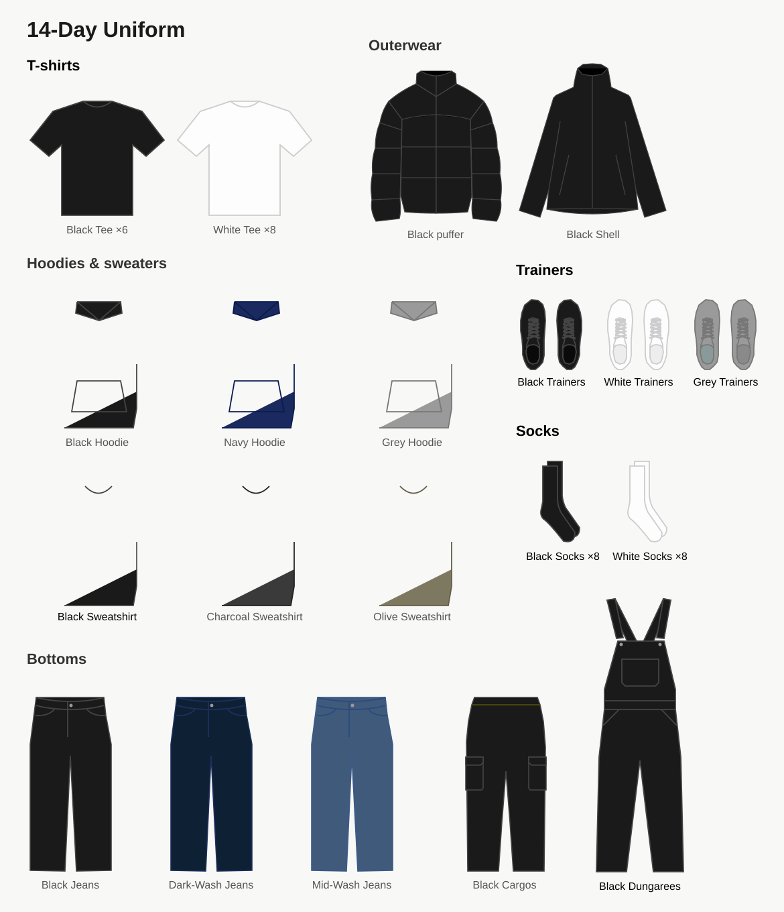

A while back, I started thinking about rebooting my wardrobe, and as autumn is getting closer, I’m back at it.
I’ve changed course slightly. Instead of trying to create the perfect system for every situation, I’m focusing on what I wear every day, 99% of the time.
I’m calling this my 14-day uniform.
The main ideas:
- Fully embracing the relaxed style I enjoy. Mostly basic, neutral streetwear: loose to baggy jeans or cargos, with a relaxed tee and hoodie or sweatshirt, finished with trainers and a puffer or technical shell.
- Cover my needs from autumn to spring, with very few purchases in between, and support a 14-day laundry cycle.
- Add some variation through neutral colours: grey, navy, olive and denim blue. All-black was nice for a while, but it got a bit boring and could sometimes look a bit out of place.
- Every item must get frequent wear, or it’s out.
I will still have pieces that are not part of the uniform. For example, some situations may still require a collared shirt. Also, I don’t think it necessarily makes complete sense to make the JNCO jeans I bought recently something I wear every day. That’s fine, and I won’t let it stop me from creating a coherent system the rest of the time.
14-day uniform plan (current hypothesis)
Bottoms
- Solid black relaxed straight jeans
- Mid-blue loose straight jeans
- Dark-blue baggy jeans
- Black cargos
- Black dungarees
Sweaters & Hoodies
- Grey relaxed hoodie
- Navy relaxed hoodie
- Black relaxed hoodie
- Black relaxed crew-neck sweatshirt
- Dark-grey relaxed crew-neck sweatshirt
- Olive relaxed crew-neck sweatshirt
Tees
- White oversized crew-neck T-shirt ×8
- Black oversized crew-neck T-shirt ×6
Jackets
- Black shell jacket
- Black puffer jacket
Trainers
- White leather trainers
- Grey retro runner trainers
- Black Gore-Tex trainers
Socks
- White socks ×8
- Black socks ×8
While some of my existing pieces will slot right into the uniform, many others are due a refresh, as I’ve been wearing them a lot, so much of this will be new purchases. In fact, I already started with two pairs of jeans last week.
I will try to get the balance right between the satisfaction of doing it all at once (new season, new me) and going more methodically and making sure I don’t buy anything I regret later.